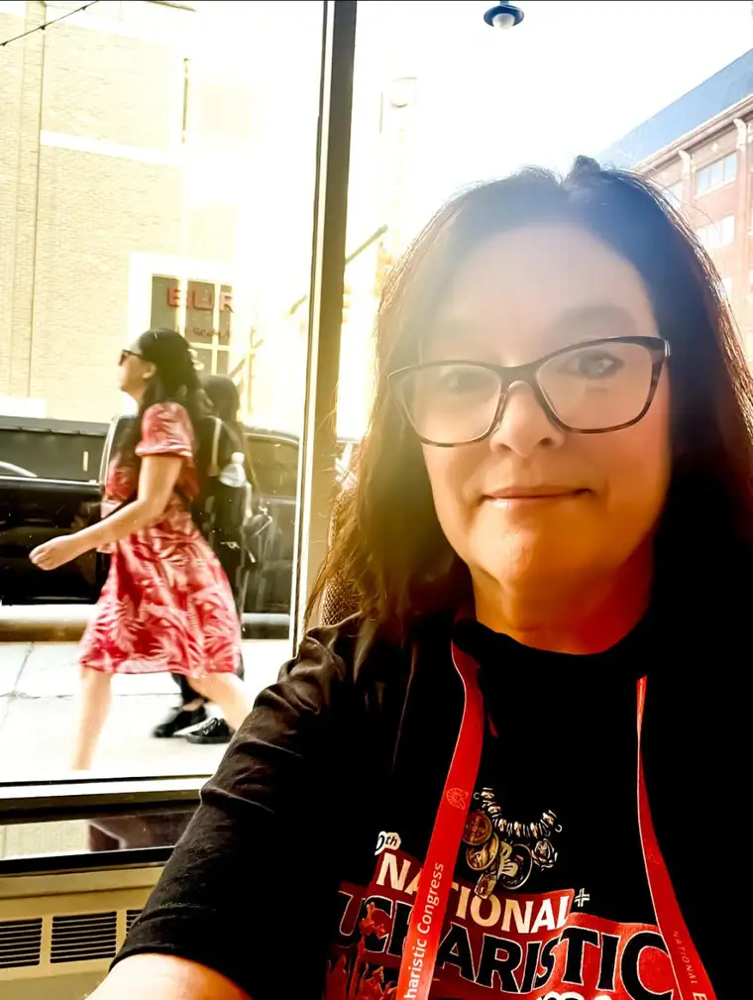
[To catch up, here are Days 1 and 2-A and 2-B and 3 and 4]
There’s no way I can do this day in one entry! It was an incredible day from start to finish. Joanne and I had just bought Congress T-shirts and sweatshirts the day before, and realized they’d be the perfect attire for our walk about town: the Eucharistic procession!
But much would happen in the lead-up to that moment. We had Mass to attend firstly, and this would be a special one: our first Byzantine rite Mass. We found a spot on the floor this time, so it was the closest we were to the altar our whole time in Indy. And we were among the people who claim this rite. We didn’t know the songs, and there were other differences. But I noticed the joy on the faces of the people around me, and I was happy they got to experience the Mass to which they are accustomed.
For those unfamiliar, the Catholic Church encompasses several dozen different rites. We fall under the Latin rite, which I believe is the largest, but there are others; all of which adhere to papal authority and are one with us in Body. But there are variances in some of the traditions and liturgies. Nonetheless, we are one family, and we were free to participate in their Eucharist like any Latin rite worship service.

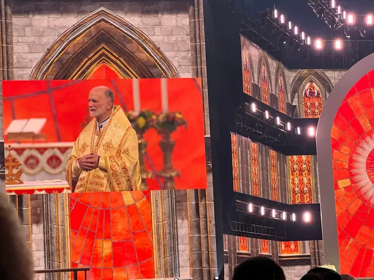
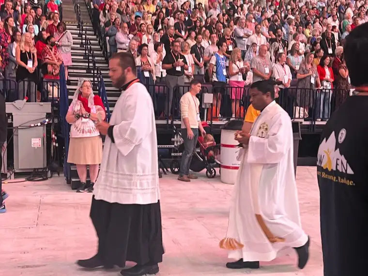
Afterward, since we were already on the floor, Joanne and I sneaked up a little further to get some seats even closer to the front so we could enjoy the opening speakers from that vantage point.
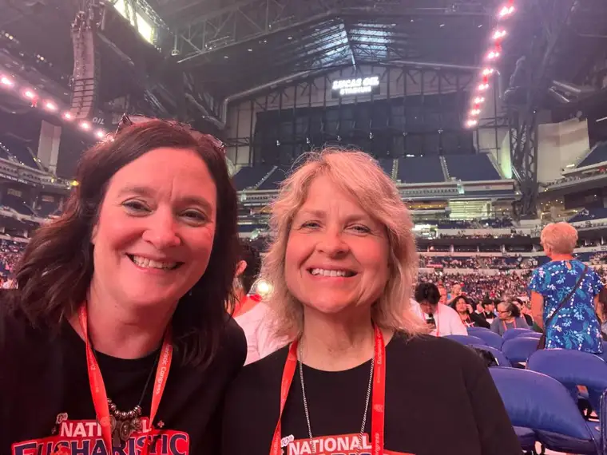
We were so pumped up for this day! Here we are in our matching T’s!
It was a little surreal to see Dr. Sri up on the big stage, talking to a stadium full, since we’d just dined with him the evening before. He must have had a good meal because he was very energetic and woke up all the sleepy people!
Deacon Harold was larger than life on the big screen. But then again, he’s larger than life off the screen too! What a great guy; another gift to the Church.
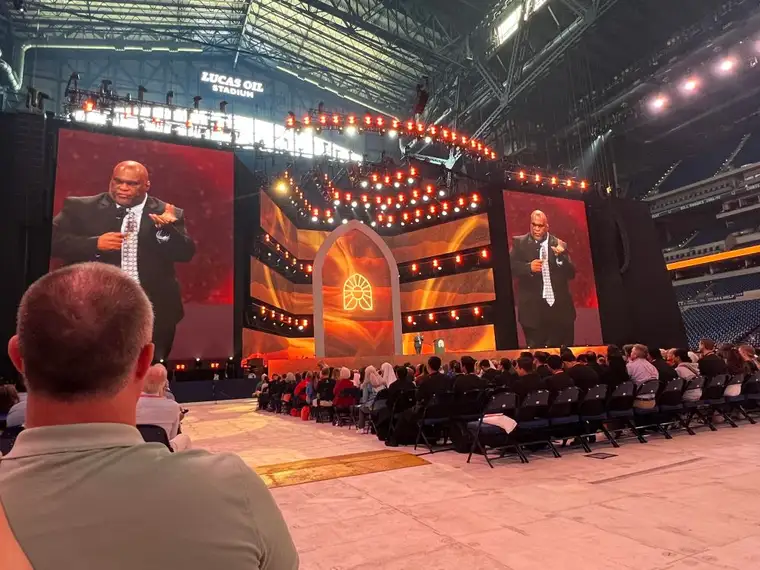
I loved his favorite “prop,” too: his Rosary.

Just like the other mornings, Sarah Kroger and her band helped prime our hearts. I just love her Amy Grant reminiscent resonance! One of the reasons I snapped this one was the touching reality of these young seminarians praising God with her. It’s hopeful to see the spirit alive in our future shepherds!
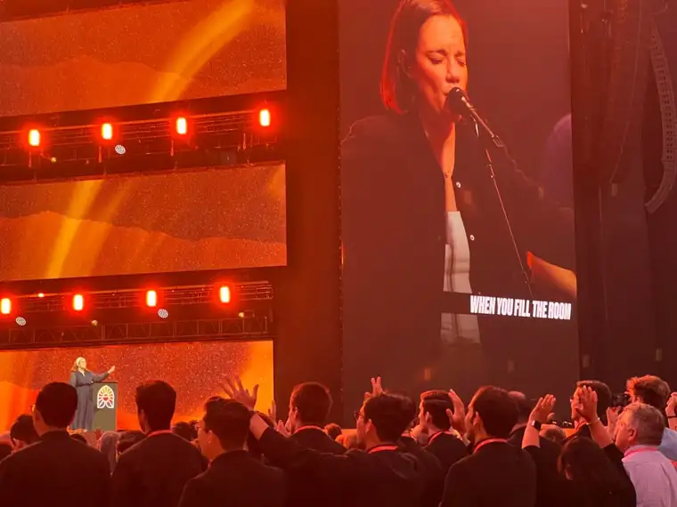
Another endearing moment came when this mother and her little girl walked up toward the front to get a closer look. They’re in the aisle in the red and pink dresses.
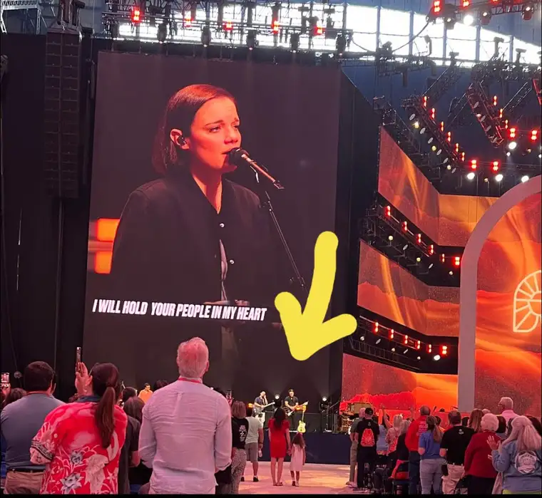
After the morning activities, we were off to meet a friend I’d been put in touch with through another friend who wasn’t at the congress. She thought we’d enjoy connecting, so we arranged to meet for lunch. We chose the Slippery Noodle for our meeting place; an historic eatery and inn that boasts live blues in the evenings. Wish we could have experienced that!
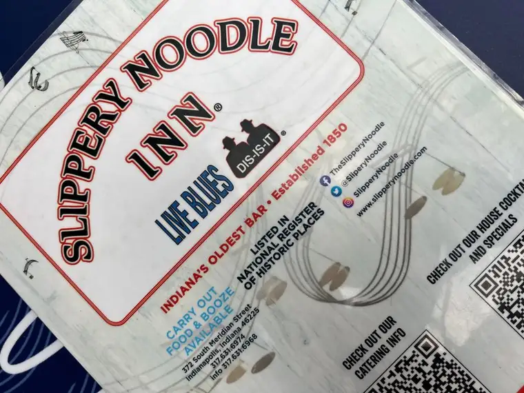
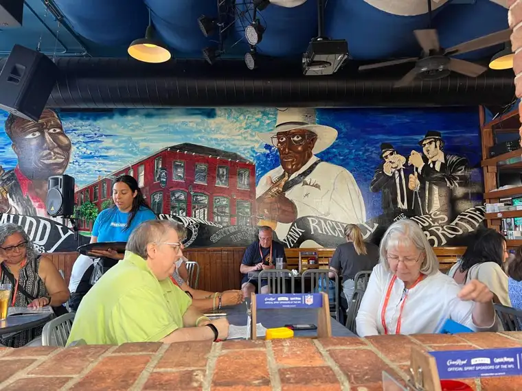
It took Patrick a little while to reach us. He was hung up talking to Jason Evert at his book signing. But while we waited and ordered a plate of heaping nachos, I took my favorite photo of Joanne from our adventure. Isn’t she beautiful?
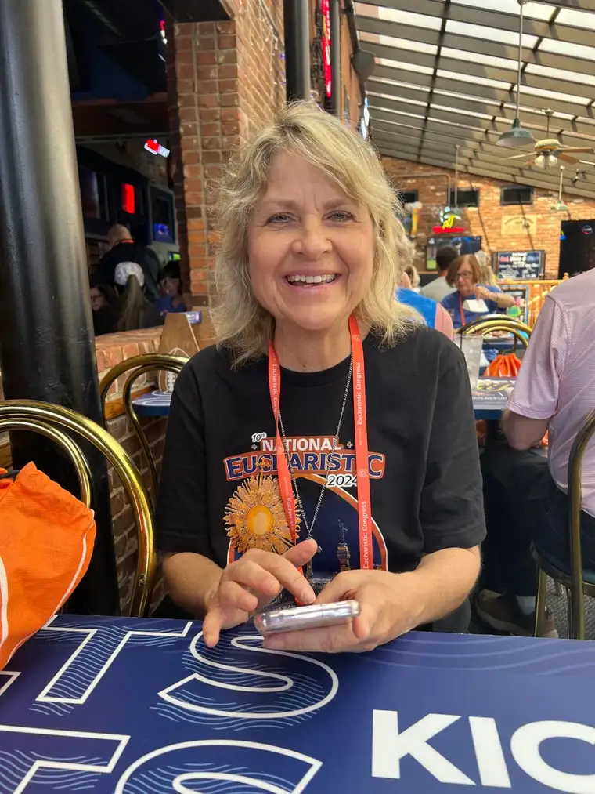
After we slurped down our appetizers and salads, and chatted a bit with our new friend, it was time to head out to find our place on the street. At this point, we parted ways with Patrick, who had some other friends to walk with, but we’d see him later in the evening.
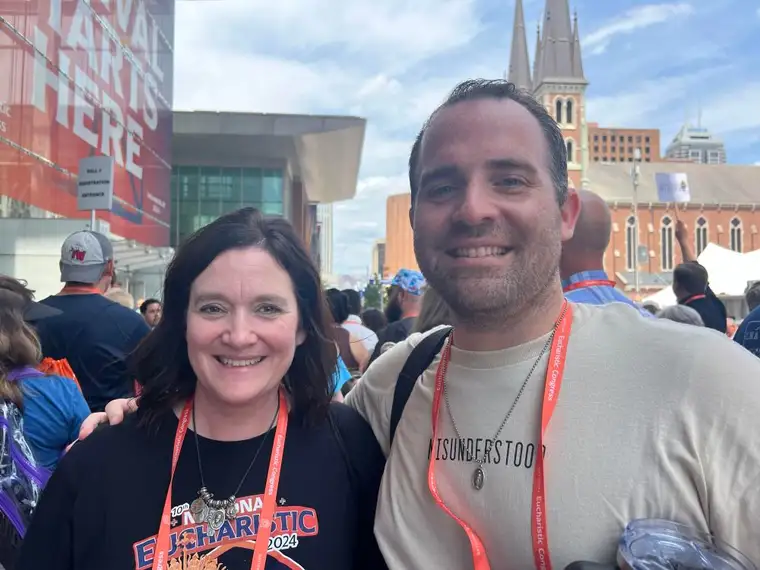
It was a bit chaotic at this point in our adventure. There were instructions regarding what we could and couldn’t do, and it was somewhat confusing trying to find the right spot to enter the procession. We opted to go back to our hotel, which was just off of the street where the procession would pass. We had time to freshen up, change shoes, and grab what we’d need for the next couple crazy hours following Jesus in the streets of Indianapolis.
I’m going to start with that tomorrow. It deserves its own entry. So more soon!